Particles
Worked with Jason Lee, Tony Zhang
ARC381 | Winter 2023
Rhino | Blender | Vray | 3ds max | Unreal Engine | AR | 3d printer
I was able to redesign the Canada Malting Silos into an art exhibit for adaptive reuse to the public while applying
mixed reality aspects. The art exhibit uses various particle shapes, representing the malt stored inside.
The big-sized particles are used as rooms inside the building, and the small-sized particles are used as
interactive elements inside and as decorative elements that look like it is leaking out, enhancing interactivity
while representing the original program of the building. Visitors of this building would be able to use AR to interact with the same “particles” inside the building easily, encouraging public accessibility.
section longitudinal / program diagram
 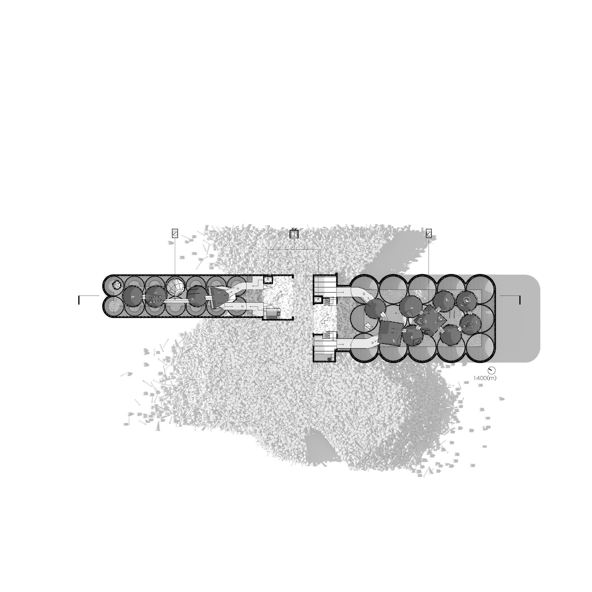
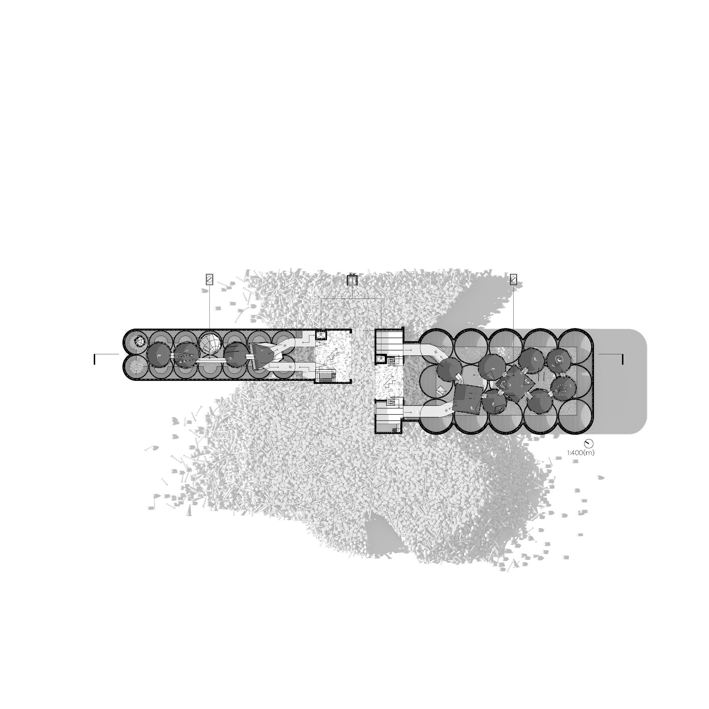
site plan / lower level plan - showing material, circulation, program
concept sketches - showing initial ideas of particle forms and interactivity
 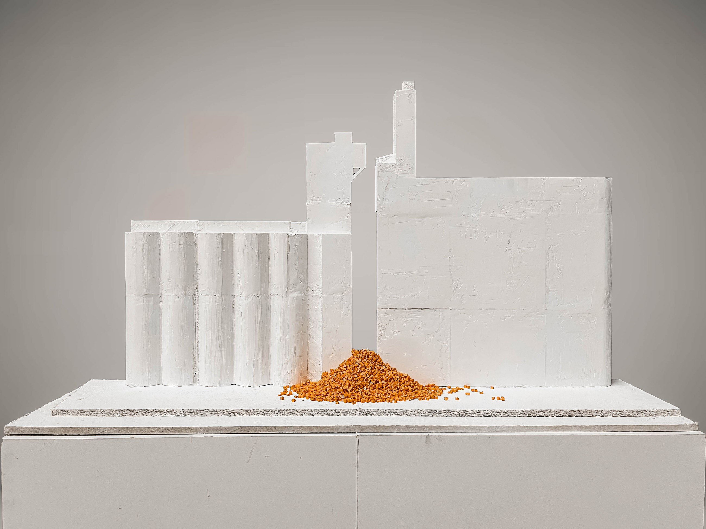
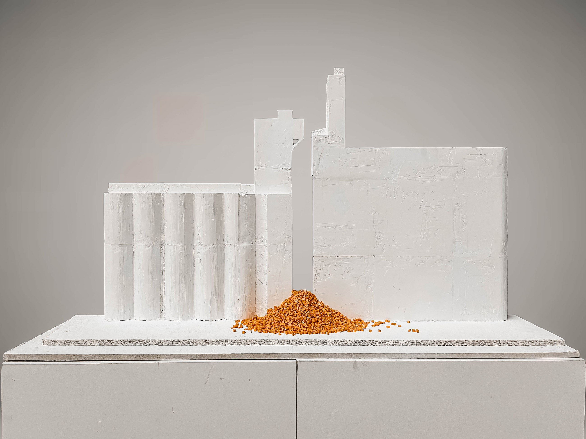

 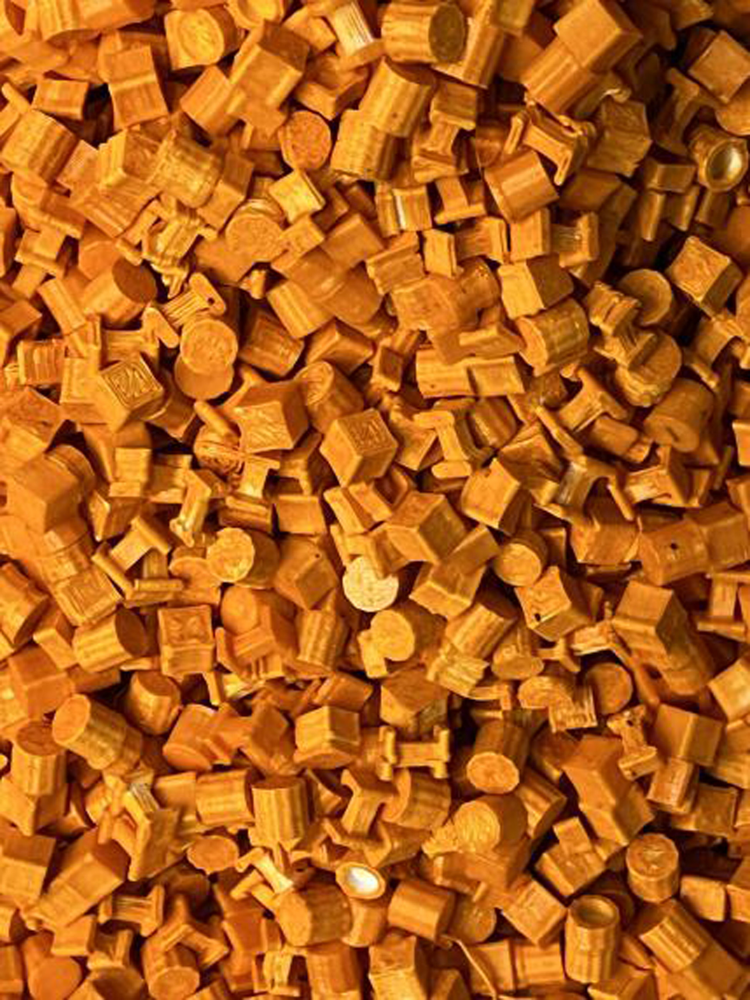
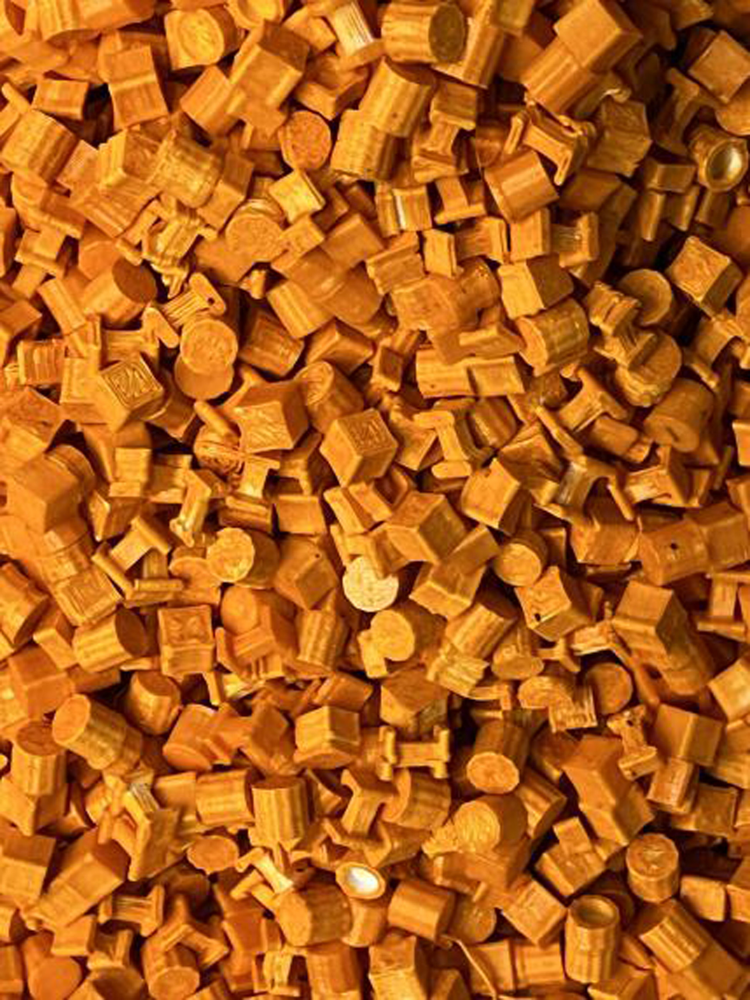
physical model photos - 1:100 scale, made with 3d printer

 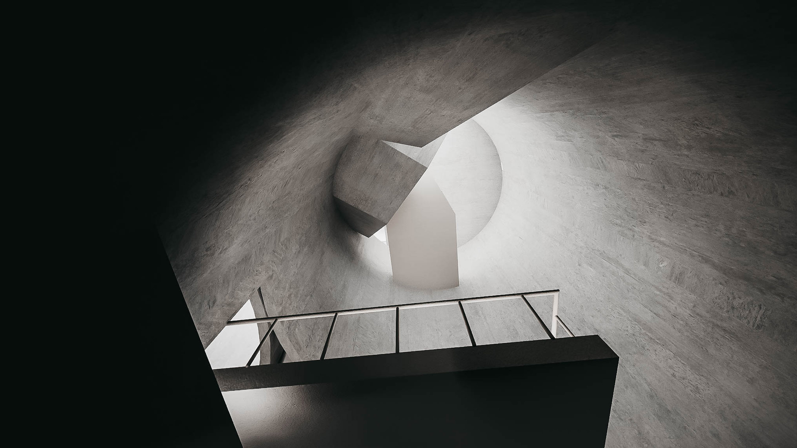
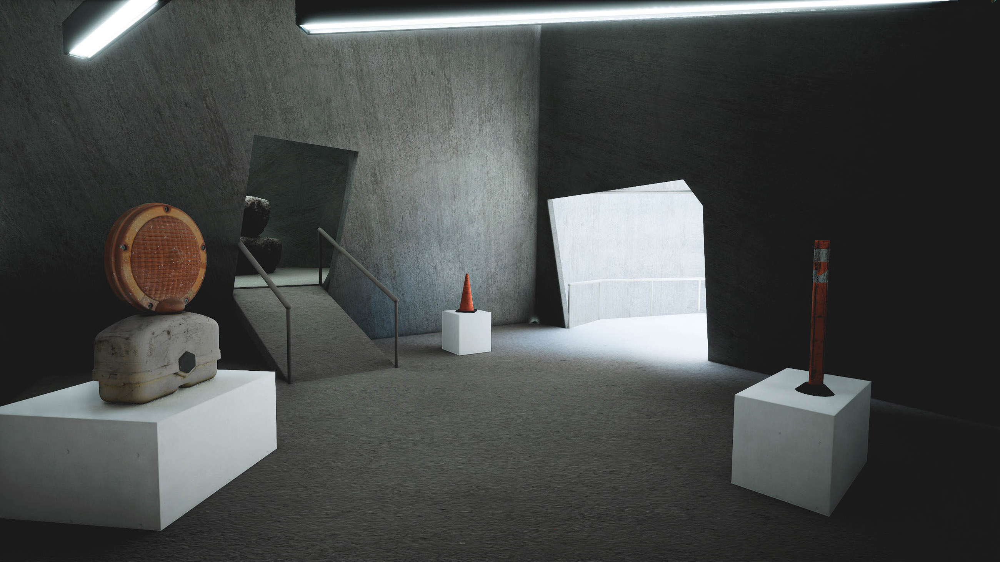
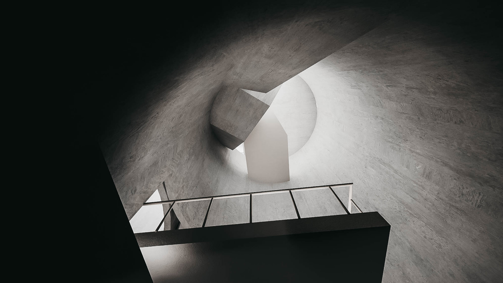
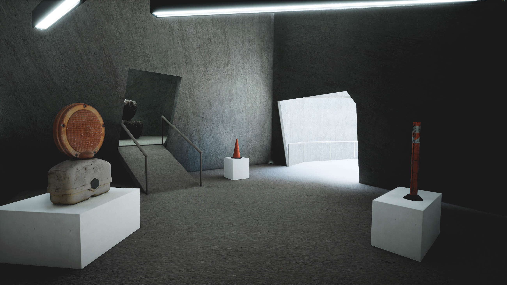
 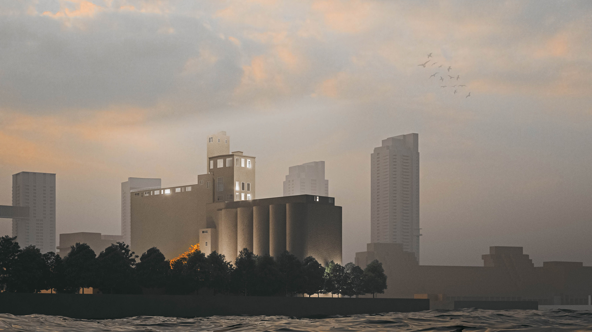
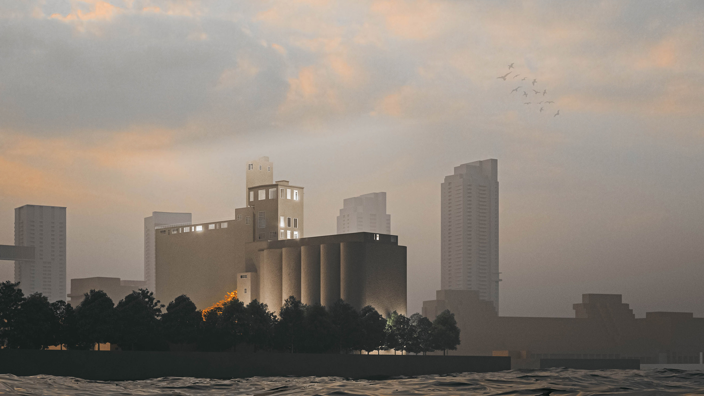

 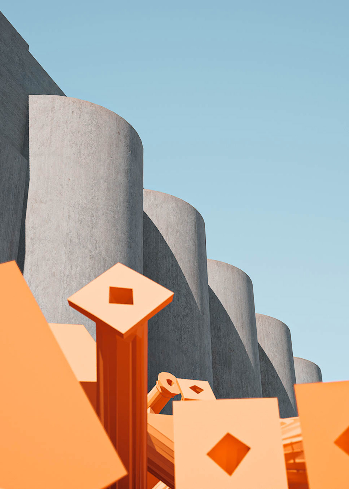
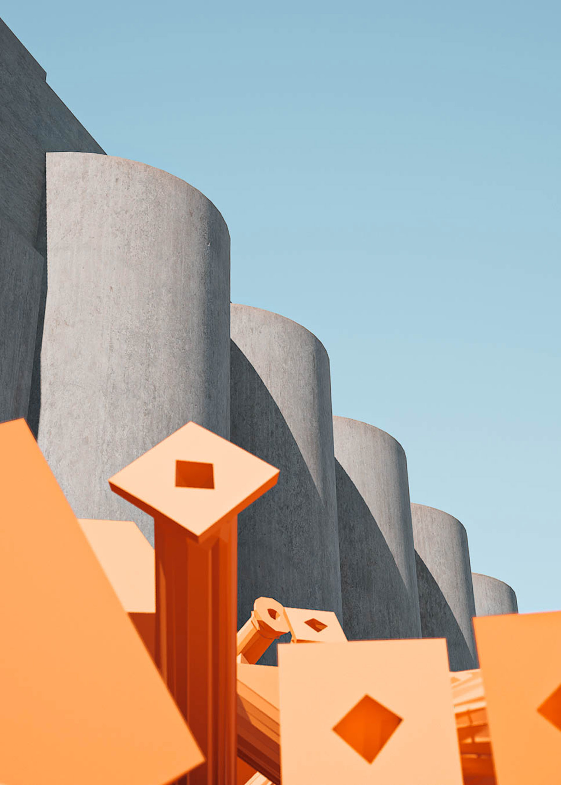
digital render images - made with Unreal Engine
Download Project PDF